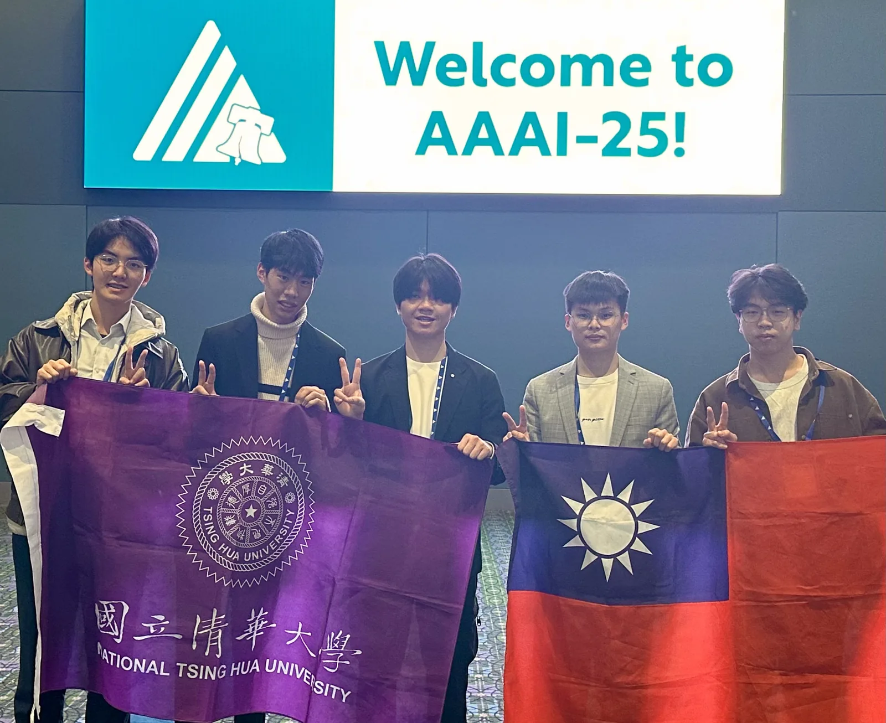
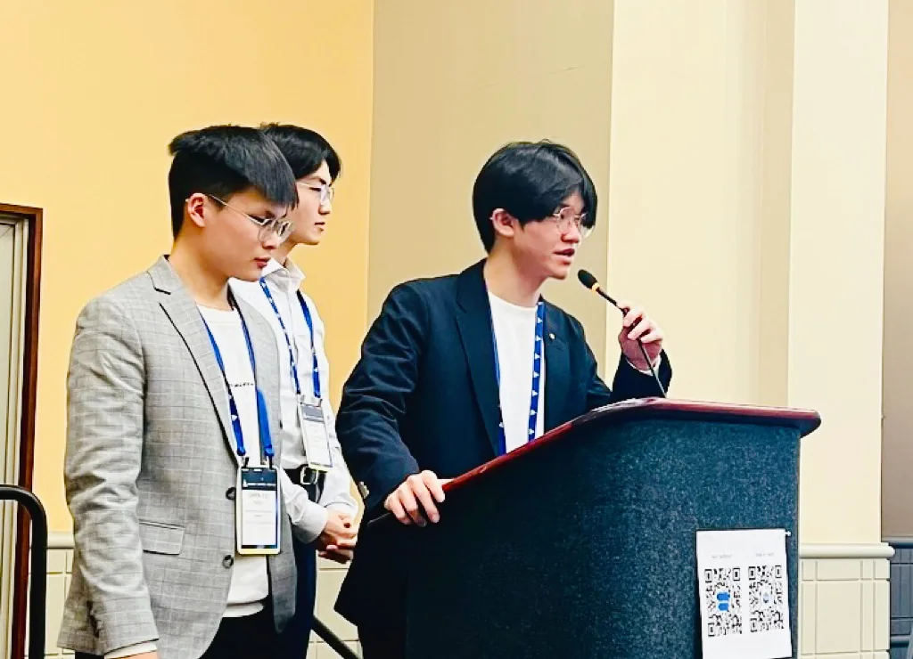

The United States- a country I had always wanted to visit. Across the Pacific, I never knew when I would truly set foot on this land. Yet, through a competition that had less than a month before the deadline-and felt almost impossible to win-an email that arrived in the middle of the night suddenly made it real. That day came earlier than I ever imagined, taking me into a world that had existed only in my mind.
The NSF HDR ML Challenge is a global anomaly-detection hackathon with hundreds of teams. Its core goal is to tackle anomaly problems from different domains using machine learning: anomalous gravitational wave signals (searching for unknown sources in the universe), butterfly hybrid detection (identifying mutations and hybrid species), and detecting anomalous sea level rise (forecasting anomalies under climate change). When I first read the rules, I was almost entirely drawn by one sentence: winning teams would be sponsored and invited to AAAI-25 in Philadelphia. We signed up with a small hope-then, two months later, that "impossible" chance became reality. We placed 2nd overall and earned a trip to the U.S., writing an unbelievable chapter in my third year at NTHU.
To chase the overall championship, we went all-in. Our team name-"20iterations"-said everything: there were only 20 days from registration to submission. Meetings were counted in days: a "small meow" every 3 days, a "big meow" every 5 days. Discussions often ran past midnight, even during travel and Lunar New Year. When the laptop failed, we used a tablet; when the tablet failed, we used a phone. I have no idea how many Colab compute units we burned through.
In every meeting, you would definitely hear:
"Wait-hold on let me think "

PHL · AAAI-25 WORKSHOP · 2025-03-01"You're totally right, but..."
"This time it can't be wrong... right..."
"There's literally no reason-if it's still 0, I'm going to..."
"Wait... hold on..."
Honestly, in that one month, I heard these lines not 100 times, but at least dozens
The New York + Philadelphia trip was surreal: calling Uber three times in a row, becoming "homeless wanderers" on Philly streets at dawn, walking through UPenn, watching the Warriors vs. 76ers, imitating Rocky at the museum, drinking a calorie-bomb milkshake at Reading Terminal Market, occasionally catching the smell of weed in the air, and even bumping into a protest related to Trump. During the two days at AAAI, from Agents to Quantum ML, I saw frontier research directions and rethought what I want to pursue next. (And watching Taiwanese people insist on speaking English was genuinely hilarious-BTW, we were the only undergraduate team among the winners.)

PHL · 2ND OF 600+ TEAMS · 2025-03Then we arrived in New York: Shake Shack, pastrami sandwiches, tacos, lobster feasts-and we left footprints at the Statue of Liberty, the Charging Bull, the Brooklyn Bridge, and Central Park. Times Square went from pouring rain to sunshine; we watched NYC at night from Top of the Rock; and we sang "I Want It That Way" countless times...
Above all, I want to thank my five teammates. Without them, there would be no "20iterations," and there would be no trip to the U.S. Maybe we didn't invent a brand-new algorithm; maybe we were lucky that our approach fit the dataset. Maybe our biggest effort wasn't modeling, but dissecting the rules and thinking through the evaluation. Even so, I truly enjoyed every round of reasoning and every breakthrough-every moment when hope reappeared at the last minute. Not only for a higher score, but for our persistence toward truth.
Thank you for taking on a challenge that seemed unwinnable during winter break. Thank you for giving up rest and holding on together through countless exhausting nights. From "20 days left" at registration to standing in Philadelphia, we walked step by step and turned an impossible dream into reality.
Time flows quietly, and eras change quickly. Those days and nights have become the past-yet they remain an eternal memory and light in my heart.
#20iterations
美國 -- 一個我一直很想去的國家，隔著太平洋不知道什麼時候才能真正踏上這片土地，但就在一場不到一個月就截止，且幾乎不可能獲得優勝的競賽中，隨著凌晨收到的一封來自美國的郵件，這一天居然就這樣提早來了，讓我前往這只存在我想像中的世界。
NSF HDR ML Challenge 異常檢測黑客松，一場來自全球數百支隊伍參與的競賽，比賽的核心目標是透過機器學習的方法解決來自不同領域的異常任務：Anomalous gravitational wave signals（尋找宇宙中未知的重力波來源）、Butterfly hybrid detection （辨識突變與混種的蝴蝶品種）、Detecting sea level rise anomalous （在氣候變遷背景下，預測海平面上升的異常情況）當初看到說明簡章時，幾乎是衝著優勝隊伍可以被贊助受邀參與在費城舉辦的AAAI-25這一句話決定報名，抱著一絲優勝的希望開始拉著朋友一起參加，沒想到這看似幾乎不可能的機會，竟在兩個月後成真，得到重力波及總積分的第二名帶我們飛往美國，為在清華的第三年寫下不可思議的篇章。為了搶下總積分第一名，我們投入了所有的賽事，我們的隊名 -- 「20iterations」，20 次迭代，正如其名，報名時距離提交截止只剩 20 天，開會的頻率只能用「天」來計算，3 天一小咪、5 天一大咪，常常一討論就開到半夜，甚至出國、過年也不放過；電腦不能用就改用平板，平板不行就用手機，不知道在 Colab 上燒了幾百個運算單元
每次開會，絕對會聽到
「欸咦等一下讓我想一下」
「我覺得你說得很有道理，但是...」
「這次不可能錯了吧⋯⋯」
「真的沒有任何理由了，如果再是 0 那我也真的...」
「欸咦等一下...」
老實說，這幾句話在這一個月內，沒有 100 次也有幾十次了
這趟紐約與費城之旅，真的很神奇。
體驗了連續叫三次的Uber、在凌晨的費城街頭當起了無殼流浪漢、走進 UPenn 校園、觀戰NBA勇士對 76 人、在美術館前模仿洛基、在 Terminal Market 裡喝著熱量爆表的奶昔、時不時聞著街頭飄散的大麻味、還意外碰上川普的抗議現場。AAAI 的兩天裡，從 Agent 到 Quantum ML，見識了世界前沿的研究方向，也讓我重新思考未來可以投入的研究領域，然後看一堆台灣人硬要用英文溝通（真的很好笑，BTW我們還是優勝隊伍中唯一的大學組。接著我們抵達紐約，吃遍 Shake Shack 漢堡、煙燻牛肉三明治、塔可、龍蝦大餐，也在自由女神、華爾街銅牛、布魯克林大橋和中央公園留下足跡，時代廣場從大雨走到晴天，在 Top of the Rock 俯瞰夜晚的紐約，也唱了無數次的 I Want It That Way......
這趟如夢般的旅程，最想感謝的莫過於另外五位隊友。黑洞組最全能的鎮育與最王牌的嘉丞，沒有鎮育，許多關鍵的討論都無法延續，許多卡關的時刻也得不到解答，更不會有20iterations ，沒有嘉丞的CNN我們無法踏上美國的旅程；潮汐組最強的沂竣和點子最多的子辰，要不是題目沒有亂搞，我相信以潮汐組的成果算是模型設計裡面最縝密的，也最符合挑戰賽的宗旨，然後沂峻沒能去美國真的好可惜；蝴蝶組最挺的安楷，不只是最難的題目，而且從一開始就獨自扛起整組的重任，一路走來真的辛苦你了。或許我們沒有創造出全新的算法模型，或許只是幸運地剛好契合了測資，或許我們真正投注最多心力的不是建模，而是對規則的拆解與思辨，但即使如此，我依然深深享受每一次的推敲與突破，在每一個以為走到盡頭的時刻，總能在最後關頭迸現新的靈感與希望，不只是為了更高的成績，而是我們對真理的執著......
謝謝你們在寒假願意接下這場幾乎沒有勝算的挑戰，謝謝你們願意放下休息、在無數個爆肝深夜裡大家一起堅持到最後。從報名那刻只剩 20 天，到最後走到了費城，我們一步一步走過來，把一個看似不可能的夢想，一起變成了真實。
時間悄然流逝，時代匆匆更迭，那些曾一起經歷的日夜已化為過去，但卻也成為我心中永恆的記憶與光。
#20iterations